Dans ce module, nous allons décrire les condenseurs de vapeur que l’on rencontre couramment dans les usines d’incinération des ordures ménagères. À la fin de ce fascicule, vous serez capables d’identifier les différents types de condenseurs : les aérocondenseurs, les tours de refroidissement, les hydrocondenseurs.
Vous pourrez expliquer leur rôle ainsi que les différents principes de fonctionnement de ces équipements.
Principes généraux de fonctionnement des condenseursL’énergie fournie par la combustion des ordures ménagères sert à produire de la vapeur dans la plupart des usines d’incinération des ordures ménagères. La vapeur peut être envoyée vers des échangeurs de chaleur pour le chauffage de sites industriels ou d’immeubles d’habitation. Elle peut servir à produire de l’électricité par le biais d’un turboalternateur. L’ensemble de l’énergie contenue dans la vapeur est puisée par ces « utilisateurs ».
Toutefois, les utilisateurs ont des demandes variables en fonction du temps. En été, par exemple, la demande au niveau des réseaux de chaleur est nulle. Comment peut-on alors évacuer le surplus d’énergie pour continuer à brûler la même quantité de déchets ménagers ? Grâce aux condenseurs, il est possible de poursuivre la conduite de l’incinérateur. Ils permettent d’évacuer l’énergie contenue dans la vapeur à l’atmosphère ou à l’eau des fleuves.
Dans les usines d’incinération des ordures ménagères, on rencontre trois types de condenseurs :
Dans ce module, nous allons décrire les différents condenseurs et leurs principes de fonctionnement.
La combustion des déchets ménagers dégage une quantité importante d’énergie calorifique récupérée grâce à une chaudière qui produit de la vapeur.
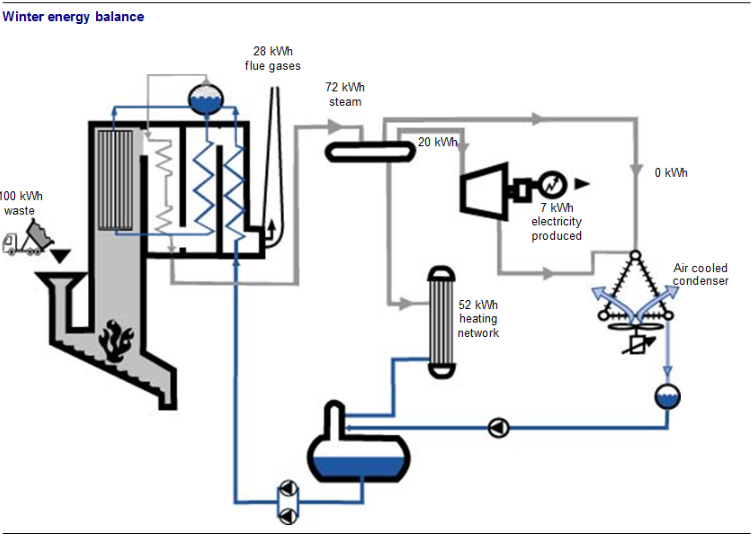
Fig. 1
Une tonne de déchets incinérés permet de produire environ 3 tonnes de vapeur contenant une énergie égale à 210 kWh. Celle-ci est ensuite envoyée vers les « utilisateurs » pour la production d’électricité (grâce au turboalternateur) ou vers des réseaux de chauffage urbain (grâce à des échangeurs de chaleur).
Selon le principe de conservation de l’énergie Q, on peut donc dire que la quantité d’énergie calorifique produite par la chaudière sous forme de vapeur est égale à la
quantité d’électricité produite + la quantité d’énergie calorifique utilisée par les réseaux de chaleur + les pertes, soit :
\[ Q_{Vapeur} = Q_{Generateur à turbine electrique} + Q_{reseaux de chaleur} + Pertes_{condenseur et autres} \]
Le rôle du condenseur consiste à récupérer toute vapeur excédentaire ou non utilisée pour la condenser et retourner les condensats vers la chaudière et ainsi permettre un nouveau cycle.
La vapeur non utilisée est la vapeur que l’on retrouve en sortie de la turbine d’un groupe turboalternateur. Toute la pression et la température n’ont pas été utilisées.
La vapeur excédentaire est le surplus de vapeur résultant d’une baisse de consommation d’un réseau ou d’une baisse de la production d’électricité. Dans ce cas, la vapeur passe directement de la chaudière au condenseur par le by-pass turbine ou réseau.
Dans chacun des cas, il faut évacuer (en perte) l’énergie contenue dans cette vapeur pour la transformer en eau chaude (condensats) et la retourner vers la chaudière. C’est le rôle des condenseurs qui sont des échangeurs de vapeur.
Les condenseurs évacuent le surplus de chaleur en la transférant aux fluides réfrigérants :
On les appelle condenseurs car la vapeur se condense dans l’équipement. Les condensats formés sont envoyés vers la bâche de condensats.
Deux exemples de situations extrêmes en hiver et en été pour une usine de production d’électricité et de chauffage :
La totalité de l’énergie contenue dans la vapeur est transformée en énergie de chauffage et en énergie électrique. Dans ce schéma, la quantité d’énergie fournie par la combustion des déchets ménagers fournit 100 kWh ; 72 kWh sont disponibles sous forme de vapeur, 28 kWh sont perdus dans les fumées.
Lorsqu’en hiver, en supposant que la turbine fonctionne et que la demande de chauffage est maximale, 52 kWh sont envoyés vers les réseaux de chaleur, 20 kWh servent à la production d’électricité (sur laquelle seulement 7 kWh d’électricité réellement produite).
On note que :
\[ Q_{Vapeur} = Q_{reseau de chaleur} + Q_{electrique} \]
\[ 72 kWh = 52 kWh + 20 kWh \]
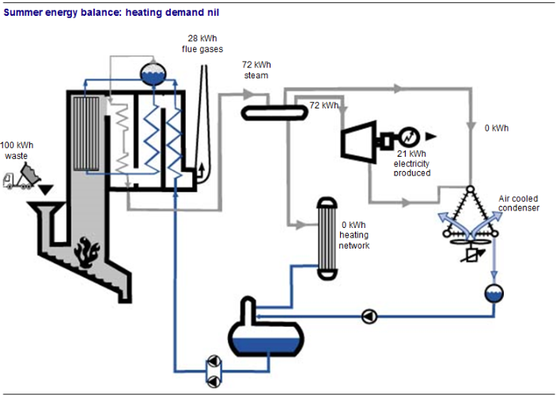
Fig. 2
En été, la totalité de l’énergie contenue dans la vapeur non utilisée est envoyée vers les aérocondenseurs et rejetée à l’atmosphère.
On présente ci-contre quelques modèles d’aérocondenseurs. Pour ces deux types de condenseurs, l’énergie de la vapeur excédentaire est échangée (cédée) en une seule étape à un fluide du milieu naturel, l’air. L’aérocondenseur est un aéroréfrigérant qui refroidit jusqu’à la condensation.
L’aérocondenseur refroidit directement la vapeur en faisant circuler de l’air sur les sources d’échange, un peu comme un radiateur de voiture.
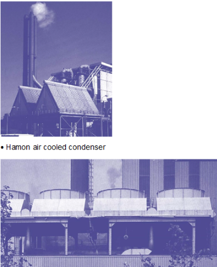
Fig. 3
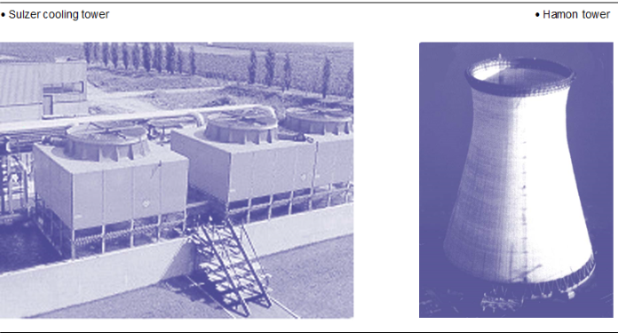
Fig. 4
Dans les systèmes utilisant une tour de refroidissement, l’énergie de la vapeur excédentaire est échangée (cédée) au milieu naturel en deux étapes.
Tout d’abord, on utilise un condenseur du type hydrocondenseur pour condenser la vapeur. Puis, l’eau chaude produite à l’intérieur du condenseur par la condensation de la vapeur est dirigée vers une tour de refroidissement où elle sera refroidie par un contact direct avec l’air ambiant pour être ensuite retournée au condenseur pour un nouveau cycle d’extraction de chaleur.
Les aérocondenseurs et les tours de refroidissement sont des échangeurs qui permettent d’évacuer (en perte) le surplus de chaleur contenu dans un fluide (vapeur ou eau) produit par la chaudière à l’air atmosphérique.
Le transfert de chaleur se fait depuis le fluide caloporteur (la vapeur ou l’eau contenant le surplus de chaleur) vers l’air atmosphérique.
Les condenseurs qui utilisent l’air atmosphérique pour refroidir l’eau sont appelés condenseurs ou tour de refroidissement évaporatifs.
On les remarque au panache blanc de vapeur qui s’échappe de la tour de refroidissement (c’est le cas par exemple des tours équipant les centrales nucléaires).
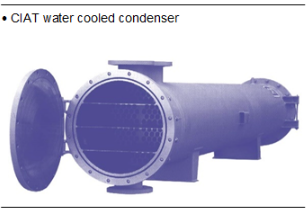
Fig. 5
Les hydrocondenseurs ont le même rôle que les aérocondenseurs. En revanche, l’échange de chaleur se fait entre la vapeur et l’eau d’un fleuve ou de la mer.
Les hydrocondenseurs sont des échangeurs de type tubulaire.
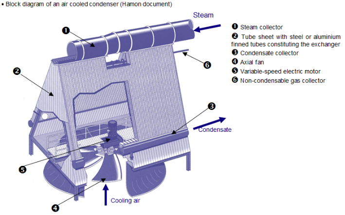
Fig. 6
La vapeur de sortie de chaudière et/ou de turbine à condenser est envoyée vers l'échangeur 2 via le tuyau d'entrée de vapeur 1. Il circule ensuite dans l'échangeur où il cède sa chaleur latente à l'air poussé par le ventilateur propulseur 4. L'air se réchauffe en traversant l'échangeur. La vapeur se condense en libérant la chaleur latente. Les condensats, ainsi formés et plus lourds que la vapeur, sont ensuite collectés en bas de l'échangeur dans le collecteur de condensats 3 puis envoyés vers le bac à condensats.
La vapeur contient toujours des gaz, tels que l’oxygène et le gaz carbonique (voir module 14). Ces gaz indésirables ne peuvent se condenser et sont donc appelés incondensables. Ils sont sources de corrosion et occupent l’espace réservé à la vapeur. Ceci entraîne une usure prématurée du condenseur (fuites), une diminution de l’échange thermique.
Les gaz non condensables sont plus légers que les condensats, et sont récupérés en haut du collecteur 6. Ils sont ensuite rejetés dans l'atmosphère. Ce largage s'effectue :
La circulation de l’air de refroidissement est assurée par tirage dit « mécanique », c’est-à-dire assurée par le ventilateur.
Le ventilateur est entraîné en rotation par un moteur électrique. L’entraînement peut être direct, c’est-à-dire que l’arbre du ventilateur est directement accouplé à celui du moteur, ou il peut être effectué par un système de poulies et de courroies.
Lorsque la quantité de vapeur à condenser augmente, il faut augmenter le débit d’air de refroidissement. On augmente alors la vitesse de rotation du moteur du ventilateur.
Lorsque la température de l’air est trop basse en hiver et qu’il n’y a pas de vapeur à condenser, la circulation de l’air froid peut provoquer le gel de l’eau dans l’aérocondenseur. Ce phénomène peut perturber la mise sous vide, la circulation de l’eau par gravité jusqu’à la bâche des condensats, la rupture de canalisation.
Pour protéger l’aérocondenseur contre le gel, on empêche l’air de circuler en fermant les ventelles situés au-dessus de l’aérocondenseur et en maintenant une arrivée minimale de vapeur dans l’aérocondenseur.
Le constructeur donne la valeur de température extérieure pour laquelle il faut fermer les ventelles (– 2 °C, par exemple).
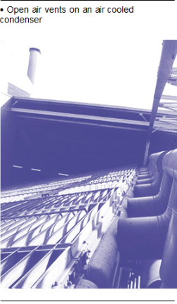
Fig. 7
Lors des rondes, le personnel de quart doit vérifier :
Lors des périodes d’arrêt technique :
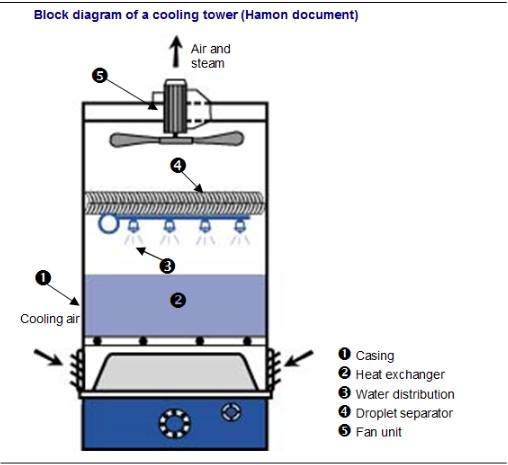
Fig. 8
On les appelle tours ouvertes car l’eau de refroidissement est en contact avec l’air atmosphérique.
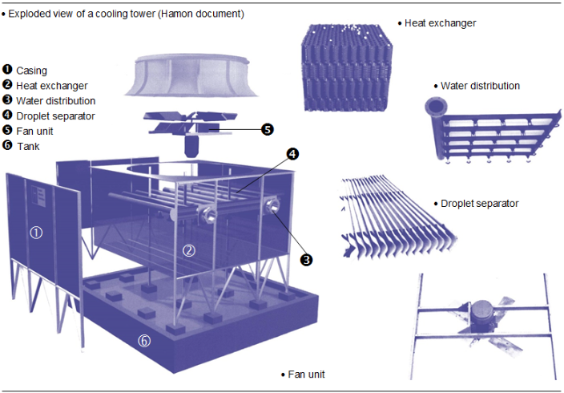
Fig. 9
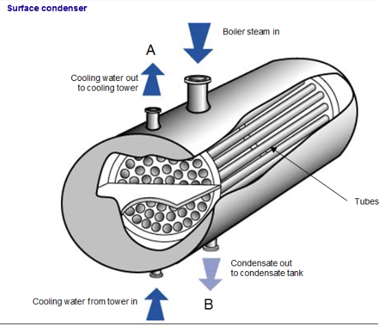
Fig. 10
Dans le cas d’un aérocondenseur, la vapeur à condenser provenant de la chaudière est
introduite directement dans l’aérocondenseur. Dans le cas d’une tour ouverte, la vapeur est introduite dans un premier échangeur de type tubulaire (appelé condenseur) où elle se condense. L’eau condensée sera envoyée dans la bâche des condensats.
La condensation est obtenue par échange de chaleur de la vapeur avec l’eau provenant de la sortie B de la tour de refroidissement. Cette eau se réchauffe et est renvoyée par la canalisation A à la tour où elle sera refroidie.
Les incondensables formés dans le condenseur à surface sont récupérés près de la sortie des condensats sur les côtés du condenseur.
Tour de refroidissementL'eau du condenseur à refroidir est introduite dans la tour par l'entrée A au sommet de la tour. Cette eau est ensuite pulvérisée à travers des buses 3. La pulvérisation favorise les échanges thermiques par convection entre l'eau et l'air. L'air, aspiré par le ventilateur 5, est introduit 7 dans le bas de la tour à travers des grilles. L'écoulement de l'eau et de l'air dans des directions opposées est appelé écoulement à « contre-courant ».
L'échange de chaleur entre l'eau et l'air se produit dans l'échangeur de chaleur 2. Une partie de l'eau s'évapore dans la tour et est entraînée avec de l'air par le ventilateur. Un panache de vapeur blanche se forme au sommet de la tour. Certaines gouttelettes d'eau peuvent également être aspirées dans le flux d'air ; elles seront ensuite capturées par le séparateur de gouttelettes 4. Le reste de l'eau se refroidit et s'écoule dans le réservoir de collecte au bas de la tour 6. L'eau refroidie est renvoyée au condenseur par la canalisation B. Le débit d'eau est obtenu à l'aide d'une pompe centrifuge.
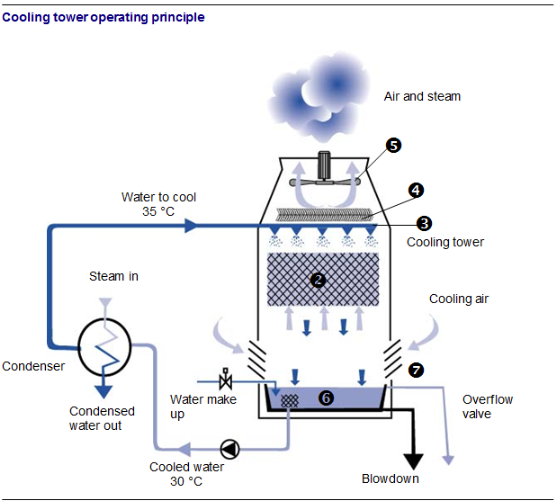
Fig. 11
Circuit d'eau de refroidissementComme nous l’avons vu précédemment, une partie de l’eau s’évapore et s’échappe à l’atmosphère. La quantité d’eau sera maintenue dans le circuit par un appoint d’eau automatique. Dès que le niveau baisse dans le bac, on réinjecte de l’eau dans le circuit au niveau du bac de récupération.
L’eau ajoutée n’est pas totalement déminéralisée. Pour diminuer la concentration en sels dans l’eau, on effectue une purge de déconcentration en bas du bac (principe identique au ballon de chaudière).
Dans le bac de récupération d’eau, on retrouve toutes sortes de débris, d’algues qui peuvent obstruer la circulation d’eau, on filtre donc l’eau en amont de la pompe à l’aide d’une crépine. On peut ajouter un produit anti-algues qui empêche le développement d’algues.
En hiver, pour éviter les risques de gel de l’eau présente dans le bac de la tour, on peut mettre en fonctionnement une résistance chauffante électrique présente dans le bac.
Lors des rondes, on vérifie :
Ce sont des condenseurs à surfaces (voir schéma condenseur à surface). Ils sont constitués par un faisceau tubulaire où circule l’eau de refroidissement (l’eau du fleuve, par exemple). La vapeur circule autour de ces tubes, dans l’enveloppe de l’échangeur. Son parcours est allongé par la présence de chicanes.
La vapeur, plus chaude que l’eau du fleuve, lui cède sa chaleur et se condense. Elle est envoyée vers la bâche des condensats.
L’eau de refroidissement est puisée du fleuve par une pompe d’aspiration, puis cette eau, une fois passée et réchauffée dans l’échangeur, est refoulée en aval du tuyau d’aspiration.
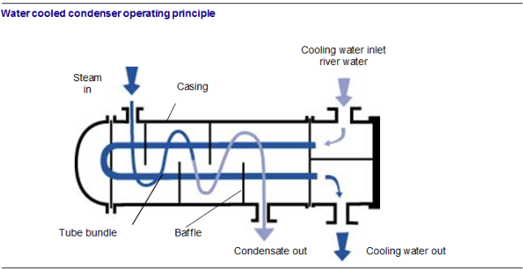
Fig. 12
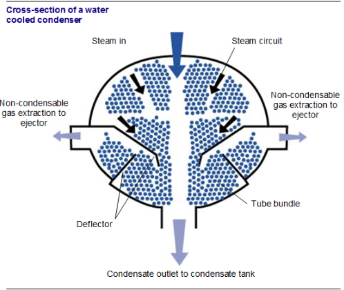
Fig. 13
Des déflecteurs sont placés de chaque côté, longitudinalement au condenseur dans la partie basse, et retiennent les gaz dès qu’ils s’échappent de la vapeur.
Les incondensables sont extraits sur les côtés de l’hydrocondenseur puis seront rejetés à l’atmosphère.
En hiver, les risques de gel de l’eau sont nuls dans l’hydrocondenseur.
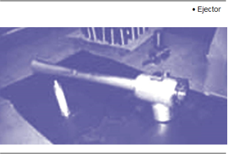
Fig. 14
Les éjecteurs permettent la mise sous vide des condenseurs à une pression inférieure à la pression atmosphérique et l’aspiration des gaz incondensables comme l’oxygène et l’azote.
Les éjecteurs ont besoin d’un fluide moteur pour fonctionner. Dans les usines d’incinération des ordures ménagères, on utilise une faible partie de la vapeur haute pression produite par la chaudière.
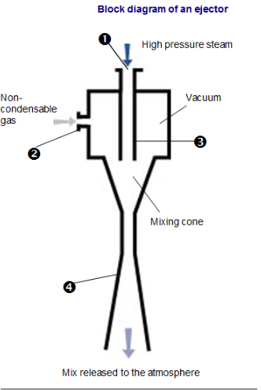
Fig. 15
La vapeur est introduite par l'entrée 1 dans l'éjecteur. Celui-ci est ensuite détendu à la sortie de la buse 3, sa pression chute en dessous de la pression atmosphérique et de la pression dans le condenseur. Il en résulte que des gaz non condensables sont aspirés dans 2. Les gaz sont ensuite mélangés à de la vapeur dans le diffuseur 4 puis rejetés dans l'atmosphère.
Pour éliminer définitivement les gaz indésirables, les éjecteurs fonctionnent en continu.
Il est impossible d’empêcher qu’il n’entre de petites quantités d’air dans une turbine aux points où elle fonctionne à dépression. Ces petites quantités d’air mêlées à la vapeur s’accumulent dans l’espace réservé à la vapeur dans le condenseur et, si on ne prend pas les dispositions pour l’expulser au fur et à mesure de son arrivée, elles tendront à annuler la dépression et à réduire l’efficacité de la turbine.
On se sert généralement d’un éjecteur pour évacuer cet air indésirable bien qu’il arrive qu’on utilise une pompe à vide, à piston ou rotative.
Dans l’éjecteur d’air, on laisse un courant de vapeur à haute pression se détendre dans un injecteur, convertissant ainsi son énergie thermique en énergie cinétique et produisant un jet à grande vitesse à la sortie de l’injecteur. Ce jet sert à entraîner l’air et les autres gaz non condensables pour les évacuer de l’espace de la vapeur dans le condenseur.
La figure ci-dessous représente un éjecteur à deux étages fonctionnant à la vapeur.
La vapeur à haute pression amenée aux deux éjecteurs se détend au sortir de l’orifice très fin. La grande vitesse ainsi provoquée entraîne les gaz du condenseur dans le premier étage du condenseur tubulaire. La vapeur s’y condense et les autres gaz sont entraînés de nouveau par le jet de vapeur de l’éjecteur du deuxième étage.
La vapeur se condense à cet étage, mais on garde la pression légèrement supérieure à celle de l’atmosphère pour permettre l’évacuation par un évent de l’air et des autres gaz dans l’atmosphère.
La chaleur récupérée de la condensation de la vapeur de l’éjecteur est absorbée par l’eau d’alimentation ou par le condenseur lors du passage entre les pompes d’extraction et les pompes d’alimentation de la chaudière. L’éjecteur devient ainsi en pratique un dispositif de réchauffage de l’eau d’alimentation pour éviter de perdre l’énergie thermique de la vapeur.
L’orifice de l’éjecteur est extrêmement petit et il faut prendre des mesures pour éviter qu’il ne s’obstrue au passage de corps étrangers qui pourraient se trouver dans les tuyaux de la chaudière. C’est pour cette raison qu’on dispose généralement un tamis très fin en amont de l’éjecteur.
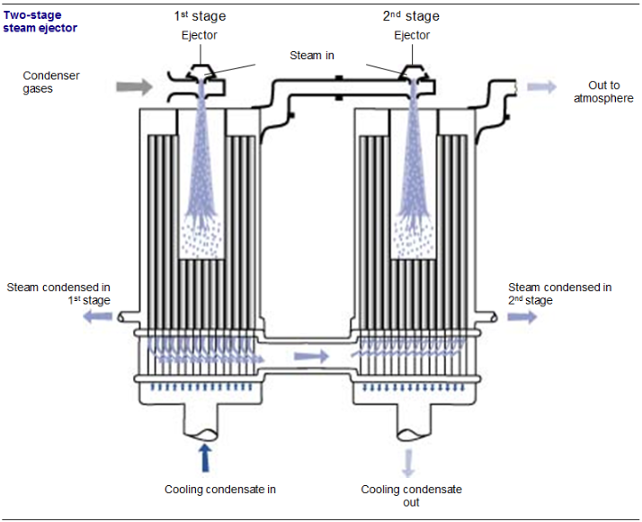
Fig. 16
La figure suivante représente schématiquement la disposition de divers éléments de l’installation dont la pompe d’extraction de l’éjecteur.
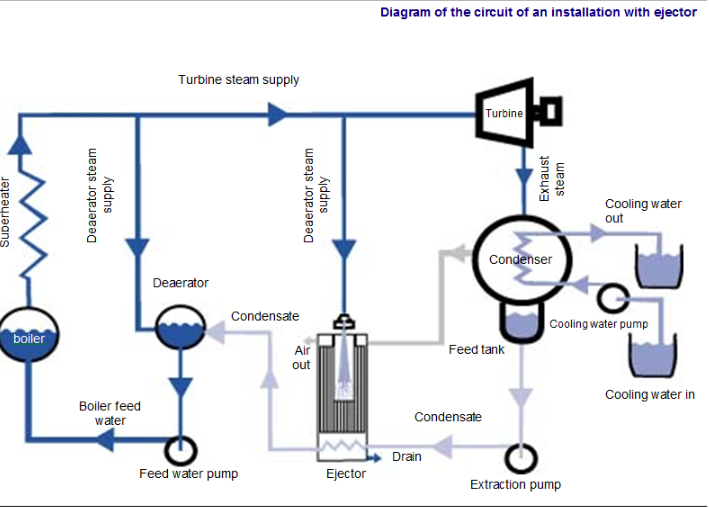
Fig. 17
Un condenseur ne serait pas complet sans son équipement de sécurité destiné à protéger contre tout incident de fonctionnement à la fois le condenseur et la turbine qui y déverse son échappement. Les principaux dangers à éviter sont l’accroissement de la contre-pression, une élévation du niveau de condensat ou la contamination de celui-ci.
Soupape de détente à l’atmosphèreLe condenseur étant un vase clos, il pourrait s’y produire une accumulation de contre-pression qui pourrait même dépasser la pression atmosphérique si, par exemple, l’alimentation en eau de refroidissement était interrompue pendant que le condenseur est en charge. Comme le condenseur n’est pas fait pour supporter une pression de l’intérieur, il aurait tôt fait d’éclater.
La soupape de détente à l’atmosphère est conçue pour s’ouvrir dès que la pression dans le condenseur s’élève au-delà de la pression atmosphérique et la dépression du condenseur tient la soupape fermée. Un joint hydraulique s’ajoute généralement à la soupape pour éviter l’infiltration d’air. On doit vérifier régulièrement, pendant que l’installation est au repos, la soupape montée sur levier équilibré pour s’assurer qu’elle est libre de fonctionner.
Remarquez qu’à cause du fait que la soupape de détente atmosphérique doit permettre la détente dans l’atmosphère de l’ensemble du débit, elle doit être de grande dimension et reliée par un tuyau vers l’extérieur.
Le verre indicateur de niveau de condenseurCe verre indique le niveau d’eau dans le réservoir d’alimentation de la chaudière, dans le condenseur. Le haut et le bas du verre sont raccordés au condenseur au-dessus et au-dessous du niveau de l’eau et l’ensemble de l’appareil est soumis à la dépression du condenseur.
Il faut veiller à ce qu’il n’y ait pas d’infiltration d’air, particulièrement aux robinets. Un tableau garni de barres diagonales peintes placé derrière le verre de niveau facilite la lecture du niveau.
Alarme de haut niveauAu verre indicateur de niveau s’ajoute souvent, pour suivre la montée indue de condensat, une alarme de haut niveau.
La hausse constante du niveau d’eau aurait tôt fait d’obstruer les sorties d’air et les gaz non condensables rempliraient l’espace sous dépression dans le condenseur. Il se créerait alors une contre-pression dans la vapeur d’échappement et le rendement de la turbine baisserait.
Détection des fuites d’eau de refroidissementSuite à une avarie du tube du condenseur ou à l’apparition d’une fuite dans une bague, l’eau de refroidissement s’infiltrerait dans la vapeur du condenseur et contaminerait le condensat. Il importe au plus haut point de déceler tout incident du genre pour corriger la situation au plus tôt. Plusieurs méthodes permettent de déceler les fuites et la plus répandue repose sur la conductivité de l’eau.
À cause des impuretés ioniques qu’elle contient, l’eau de refroidissement est un très bon conducteur d’électricité, alors que le condensat pur est un très pauvre conducteur. On peut par conséquent détecter les infiltrations d’eau de refroidissement en mesurant la conductivité d’un échantillon du condensat à l’aide d’un appareil de mesure « conductivimètre ».
On peut déceler la présence de sel dans l’eau à l’aide du nitrate d’argent. Cette méthode convient lorsque l’eau de refroidissement contient des sels de sodium. Il faut effectuer la réparation le plus tôt possible après la confirmation d’une fuite.
Pour découvrir le tube défectueux, il faut soumettre les tubes du condenseur à un essai à l’eau. Le condenseur étant au repos, on ouvre les portes d’eau de refroidissement pour qu’on puisse atteindre les plaques tubulaires. On remplit ensuite d’eau l’espace réservé à la vapeur en ayant soin, si le condenseur repose sur des supports à ressort, de poser des cales sous l’appareil.
La pression de l’eau s’exerce donc de l’espace normalement réservé à la vapeur vers l’intérieur des tubes de refroidissement, soit à l’inverse des conditions normales d’utilisation et on retrace facilement le tube défectueux par l’eau qui s’y infiltre. Il existe d’autres méthodes pour localiser une fuite.
Les purgeurs de gaz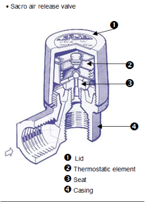
Fig. 18
Lorsque la pression dans le condenseur est supérieure à la pression atmosphérique, c’est le cas des usines qui utilisent des turbines à contre-pression, l’évacuation des incondensables (oxygène et dioxyde de carbone) à l’atmosphère se fait automatiquement par des purgeurs d’air thermostatiques. Ces purgeurs sont installés en haut du condenseur.
Lorsque la vapeur est mélangée à de l’air, sa température chute. L’élément thermostatique détecte la chute de température et se déforme, libérant l’orifice percé
sur le siège. La vapeur et l’air s’échappent alors par le bas du corps š. Le mélange est alors progressivement remplacé par de la vapeur plus chaude. L’élément thermostatique se réchauffe et obture le siège.
Vanne de by-passLe surplus d’énergie à évacuer au travers du condenseur est possible grâce à une vanne de régulation placée sur la canalisation de by-pass. Quand la quantité d’énergie ou de vapeur augmente la vanne de régulation s’ouvre et laisse passer la vapeur vers le condenseur.
La régulation est effectuée grâce à la mesure de pression sur le barillet haute pression.
Lorsque la demande d’énergie des utilisateurs diminue, la vapeur non utilisée s’accumule dans le barillet. Ceci entraîne une augmentation de pression. Il faut alors ouvrir la vanne de by-pass. Inversement lorsque la demande d’énergie des utilisateurs augmente, la pression diminue, il faut fermer la vanne de by-pass.
Cette vanne à forte perte de charge (voir module 15) permet la diminution de la pression à un niveau acceptable pour le condenseur. Cette pression passe alors de 40 bars à une pression comprise entre 0,2 (cas d’une turbine à condensation) et 5 bars absolus (cas d’une turbine à contre pression).
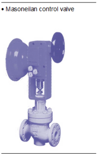
Fig. 19
DésurchauffeÀ l’entrée du condenseur, on injecte de l’eau après la vanne de by-pass pour désurchauffer la vapeur et faciliter la condensation. La quantité d’eau injectée est fonction de la température de sortie de la vapeur après la vanne. Si la température augmente, on augmente la quantité d’eau à injecter.
Schéma d’ensembleLe schéma suivant montre l’emplacement de la vanne de by-pass et de l’injection d’eau de désurchauffe. Il permet de voir comment circule la vapeur depuis la production jusqu’aux équipements.
Fig. 20
Fig. 21
Dans le schéma ci-contre, on montre l’influence d’une chute des consommations de vapeur sur les valeurs de pression, température et débit au niveau du circuit de vapeur.
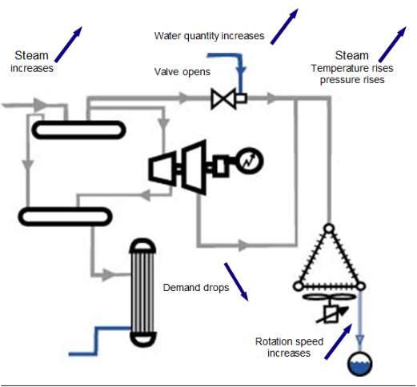
Fig. 22
Dans le schéma ci-contre,
on montre l’influence d’une augmentation des consommations de vapeur sur les valeurs de pression, température et débit au niveau du circuit de vapeur.
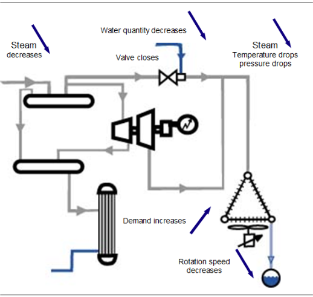
Fig. 23